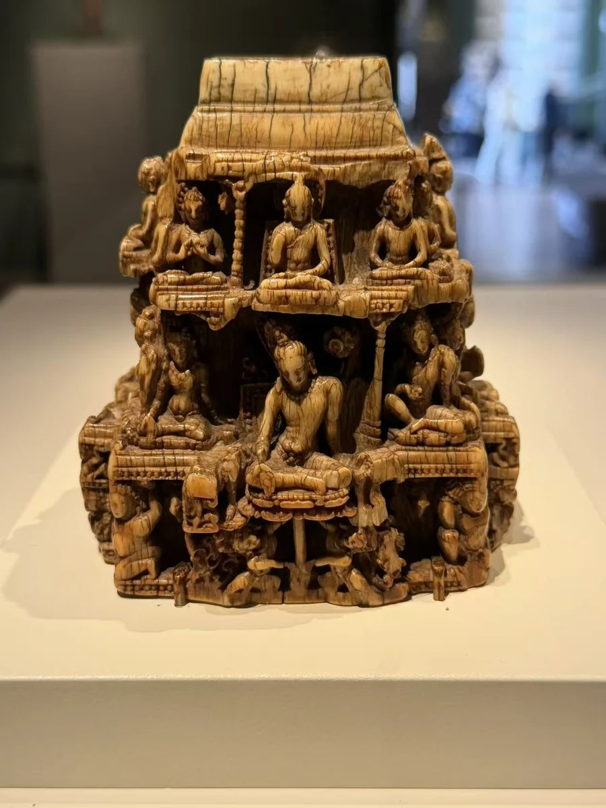
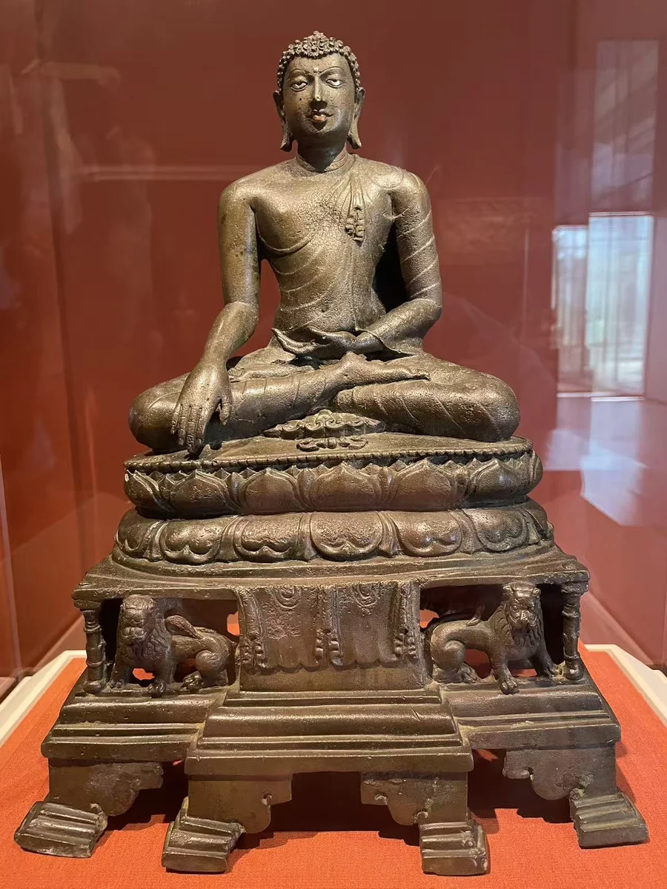

俱利诃尔不动佛
克利夫兰美术馆
08 / CLOSE LOOKING

西雅图这件残缺的小型结构由象牙雕成，四面的人物与上方成列的佛，构成可从不同方向观看的宇宙模型。它与俱利诃尔不动佛的金属身体并置，提示帕拉时代艺术既可以集中于一尊像，也可以把多重神圣空间压缩进一个物件。 [26] [19]
细看：象牙结构的多层人物；顶部缺失的孔洞；不动佛座前的金刚杵。
克利夫兰美术馆
图片按各自比例展示，实物不等大。

青铜嵌银与铜
[19]作品基本资料据现场展签及下列馆方记录整理；文字中的观看描述基于这里的现场照片。